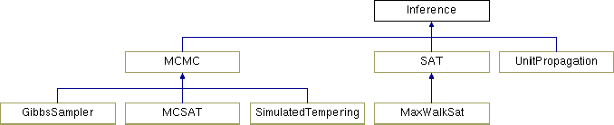

| <-i <string» | Comma-separated input .mln files. |
| [-cw <string>] | Specified non-evidence atoms (comma-separated with no space) are closed world, otherwise, all non-evidence atoms are open world. Atoms appearing here cannot be query atoms and cannot appear in the -o option. |
| [-ow <string>] | Specified evidence atoms (comma-separated with no space) are open world, while other evidence atoms are closed-world. Atoms appearing here cannot appear in the -c option. |
| [-m [bool]] | Run MAP inference and return only positive query atoms. |
| [-a [bool]] | Run MAP inference and show 0/1 results for all query atoms. |
| [-p [bool]] | Run inference using MCMC (Gibbs sampling) and return probabilities for all query atoms. |
| [-ms [bool]] | Run inference using MC-SAT and return probabilities for all query atoms |
| [-simtp [bool]] | Run inference using simulated tempering and return probabilities for all query atoms |
| [-seed <integer>] | [random] Seed used to initialize the randomizer in the inference algorithm. If not set, seed is initialized from the current date and time. |
| [-lazy [bool]] | [false] Run lazy version of inference if this flag is set. |
| [-lazyNoApprox [bool]] | [false] Lazy version of inference will not approximate by deactivating atoms to save memory. This flag is ignored if -lazy is not set. |
| [-memLimit <integer>] | [-1] Maximum limit in kbytes which should be used for inference. -1 means main memory available on system is used. |
| [-mwsMaxSteps <integer>] | [1000000] (MaxWalkSat) The max number of steps taken. |
| [-tries <integer>] | [1] (MaxWalkSat) The max number of attempts taken to find a solution. |
| [-targetWt <integer>] | [the best possible] (MaxWalkSat) MaxWalkSat tries to find a solution with weight <= specified weight. |
| [-hard [bool]] | [false] (MaxWalkSat) MaxWalkSat never breaks a hard clause in order to satisfy a soft one. |
| [-heuristic <integer>] | [1] (MaxWalkSat) Heuristic used in MaxWalkSat (0 = RANDOM, 1 = BEST, 2 = TABU, 3 = SAMPLESAT). |
| [-tabuLength <integer>] | [5] (MaxWalkSat) Minimum number of flips between flipping the same atom when using the tabu heuristic in MaxWalkSat. |
| [-lazyLowState [bool]] | [false] (MaxWalkSat) If false, the naive way of saving low states (each time a low state is found, the whole state is saved) is used; otherwise, a list of variables flipped since the last low state is kept and the low state is reconstructed. This can be much faster for very large data sets. |
| [-burnMinSteps <integer>] | [100] (MCMC) Minimun number of burn in steps (-1: no minimum). |
| [-burnMaxSteps <integer>] | [100] (MCMC) Maximum number of burn-in steps (-1: no maximum). |
| [-minSteps <integer>] | [-1] (MCMC) Minimum number of Gibbs sampling steps. |
| [-maxSteps <integer>] | [1000] (MCMC) Maximum number of Gibbs sampling steps. |
| [-maxSeconds <integer>] | [-1] (MCMC) Max number of seconds to run MCMC (-1: no maximum). |
| [-subInterval <integer>] | [2] (Simulated Tempering) Selection interval between swap attempts |
| [-numRuns <integer>] | [3] (Simulated Tempering) Number of simulated tempering runs |
| [-numSwap <integer>] | [10] (Simulated Tempering) Number of swapping chains |
| [-numStepsEveryMCSat <integer>] | [1] (MC-SAT) Number of total steps (mcsat + gibbs) for every mcsat step |
| [-numSolutions <integer>] | [10] (MC-SAT) Return nth SAT solution in SampleSat |
| [-saRatio <integer>] | [50] (MC-SAT) Ratio of sim. annealing steps mixed with WalkSAT in MC-SAT |
| [-saTemperature <integer>] | [10] (MC-SAT) Temperature (/100) for sim. annealing step in SampleSat |
| [-lateSa [bool]] | [false] Run simulated annealing from the start in SampleSat |
| [-numChains <integer>] | [10] (Gibbs) Number of MCMC chains for Gibbs sampling (there must be at least 2). |
| [-delta <double>] | [0.05] (Gibbs) During Gibbs sampling, probabilty that epsilon error is exceeded is less than this value. |
| [-epsilonError <double>] | [0.01] (Gibbs) Fractional error from true probability. |
| [-fracConverged <double>] | [0.95] (Gibbs) Fraction of ground atoms with probabilities that have converged. |
| [-walksatType <integer>] | [1] (Gibbs) Use Max Walksat to initialize ground atoms' truth values in Gibbs sampling (1: use Max Walksat, 0: random initialization). |
| [-samplesPerTest <integer>] | [100] Perform convergence test once after this many number of samples per chain. |
| <-e <string» | Comma-separated .db files containing known ground atoms (evidence), including function definitions. |
| <-r <string» | The probability estimates are written to this file. |
|
infer.h contains functions used in infer.cpp that can be shared with other modules. GroundPredicate and GroundClause are the counterparts of Predicate and Clause in logic/. We created separate classes for inference in order to save space since most of the instance variables in Predicate and Clause are not needed during inference, and inference requires us to ground the MLN to create a Markov random field that may take up a lot of memory. MRF represents the Markov random field and contains the code for Gibbs sampling. GelmanConvergenceTest is used to determine convergence during burn-in, and ConvergenceTest is used to determine convergence during Gibbs sampling.
All inference algorithms in Alchemy are implemented as subclasses of the abstract class Inference. Currently, the class hierarchy contains two large classes of inference algorithms: SAT-solvers and MCMC algorithms. These two classes hold the parameters which are common among all flavors of SAT-solvers and MCMC algorithms, respectively. SAT and MCMC are also implemented as abstract classes as they should only serve as superclasses for various implementations.

All inference algorithms are based on a VariableState (see dir /src/logic/) which encodes the state of the propositional variables and clauses. There are two different methods to build the state: lazily and eagerly. An eager state builds a Markov random field based on the queries, the MLN and the domain of constants. Inference is then run on the clauses and variables in the MRF. A lazy state makes the assumption of all variables being false in the beginning and activates variables and clauses as needed by the inference algorithm. In sparse domains, this can lead to large savings in memory usage. The laziness or eagerness of a state is encapsulated in the class VariableState and is set with the constructor.
In addition, all inference algorithms can be instantiated with a seed for the random number generator, if needed. If the algorithm contains no randomness, this is ignored. The ability to set the seed is useful when debugging and comparing different parameter settings of an algorithm.